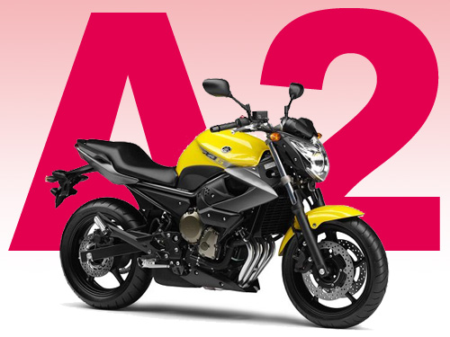

Ce site est un site découverte où nous apprenons le codage. Nous avons donc décidés d'apprendre ceci sur un thème qui nous tiens à coeur,
ce site parlera de moto qui est notre passion commune.
Ce site sera donc dédié à la moto, vous y apprendez les bases, les notions de circulation, les fiches de notation,
vous aurez un petit cours pour les débutant afin de savoir les coups éventuels de cette passion. Venez visiter le site !

Permis A2 :
Depuis 2016, le permis A2 est destiné à tous les conducteurs de motocyclettes, dès 18 ans, d’une puissance n’excédant pas 35 kW et dont le rapport puissance/poids est inférieur à 0,2 kW/kg. Ces motocyclettes ne doivent pas être issues d'un modèle développant plus de 70kW. Ce permis est sans aucun doute plus complexe que le classique permis B, mais pas de panique !
Vous trouverez sur ce site toute les explications concernant les étapes du permis A2 et de quoi prendre la route en toute sérénité, V à vous futurs amis motards !
Un titulaire d’un permis A2 depuis plus de 2 ans peut se voir délivrer, après une formation de 7h, un permis de la catégorie A afin de pouvoir conduire des motos plus puissantes.